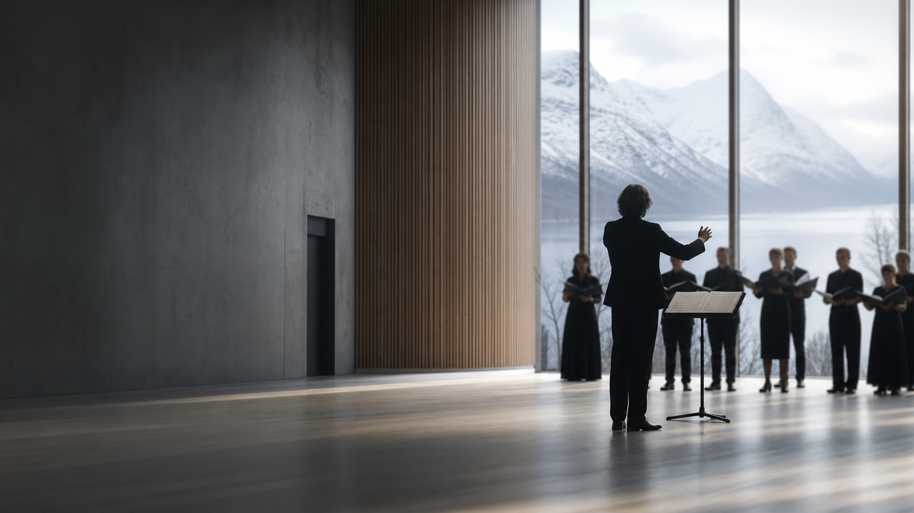

Norwegian Soloists' Choir
Longtime artistic director and chief conductor of one of Europe's most acclaimed professional chamber choirs, known for Nordic repertoire, contemporary music, innovative programming, touring, and award-winning recordings.

Norwegian conductor · educator · artistic leader
Listening is the beginning of music.
Grete Pedersen is one of Norway's most respected conductors, admired internationally for work that combines exacting musical precision with emotional depth.
Her career spans professional choirs, orchestras, contemporary music projects, recordings, education, and guest conducting across Europe.
Pedersen's artistic practice places the human voice at the center of musical and social imagination. Her work explores how sound, silence, and shared breath can create community without reducing complexity.
Rooted in Nordic traditions and contemporary expression, her programming makes space for sacred repertoire, commissioned works, experimental vocal language, and the continuing evolution of choral culture.
Longtime artistic director and chief conductor of one of Europe's most acclaimed professional chamber choirs, known for Nordic repertoire, contemporary music, innovative programming, touring, and award-winning recordings.
Professor, conducting teacher, and mentor to generations of young conductors, with masterclass work focused on sound, interpretation, leadership, and professional choir development.
Collaborations include the Swedish Radio Choir, BBC Singers, Netherlands Chamber Choir, RIAS Kammerchor, Danish National Vocal Ensemble, professional choirs, orchestras, and festivals.
The full biography can expand into a press-ready version, a long-form narrative, and a downloadable professional biography.
Conducting studies and advanced artistic training at the Norwegian Academy of Music.
Transformative artistic leadership with the Norwegian Soloists' Choir over three and a half decades.
Performances, festivals, and guest conducting work with leading European professional ensembles.
Critically acclaimed releases, international recording recognition, and distinguished cultural contributions.
Extensive recording work with the Norwegian Soloists' Choir includes internationally released, critically acclaimed, and award-winning projects.
Streaming embeds for Spotify, Apple Music, YouTube, or label pages.
Critical excerpts, awards, and recording notes.
Concert excerpts, interviews, rehearsal footage, and festival appearances.
Short bio, long bio, portrait files, repertoire notes, and approved credits.
Portraits, conducting, concerts, rehearsals, masterclasses, and recording sessions.
Topics include choral sound, artistic interpretation, programming, Nordic repertoire, leadership, contemporary music, professional choir development, and young conductor mentorship.
Guest conducting, festivals, masterclasses, media requests, representation, and institutional collaborations.